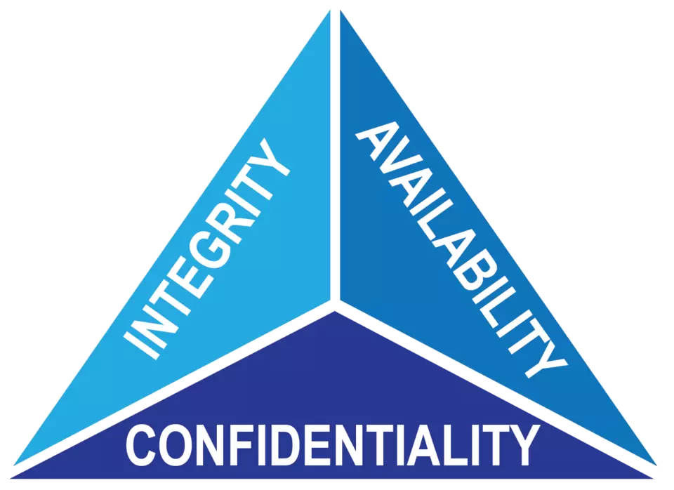
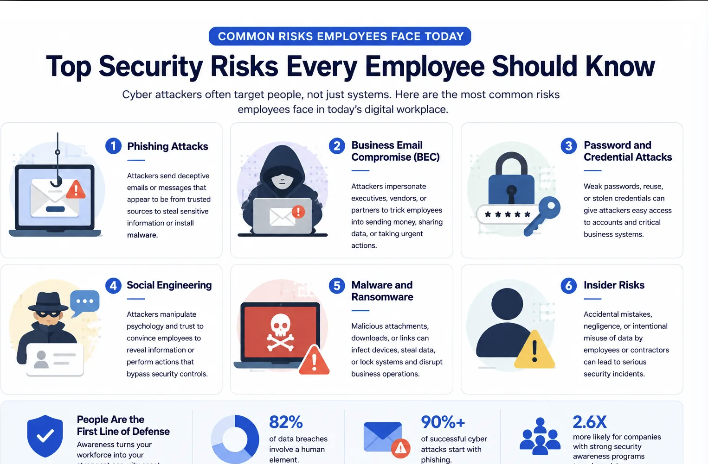

The main concepts organizations should be aware of and the principles they should adhere to.
The CIA Triad is a foundational model for information security that stands for Confidentiality, Integrity, and Availability.

Confidentiality:
Prevents unauthorized disclosure of sensitive or private information and ensures data is accessible only to those who are authorized.Integrity:
Guarantees that data is accurate, trustworthy, and has not been altered or tampered with in an unauthorized way during storage or transmission.Availability:
Ensures that systems, networks, and data are up, running, and accessible to authorized users when needed.Introduction to Cybersecurity
Password Security
Phishing & Social Engineering Awareness
Safe Internet & Email Practices
Device Security (Secure use of Devices)
Data Protection & Privacy
Incident Reporting Procedures
Remote Work Security Best Practices
Physical Security Awareness
Corporate Security Policies
Social Media & Online Behavior Risks
